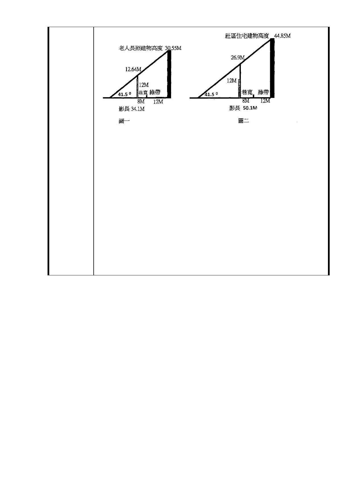

（1）老人長照建物高度為 30.55M，對面的林口街 80 巷公寓，
冬至中天受日照最多時被陰影籠罩的高度為 12.64 公尺，
公寓完全被陰影籠罩。（如圖一）
（2）社區住宅建物高度為 44.85M 對面的林口街 80 巷公寓，冬
至中天受日照最多時被陰影籠罩的高度為 26.9 公尺，公寓
完全被陰影籠罩。（如圖二）。
5.現在社福用地容積率調高為 400%，將來建築物必定會高於
30.55M 或 44.85M，林口街 80 巷公寓非但冬季處於黑暗中，
連春秋兩季亦將不見天日。因此建請在北基地鄰林口街八十巷
側規劃綠帶，寬度必須足夠維持法律保障的日照權。
6.若是罔顧居民權益，不理會居民意見，豈不是一開始就埋下一
顆強迫居民抗爭的種子，這樣顢頇的政策，市民無法接受，一
定會抗爭到底。若是在都市計畫書內，就預先保障居民權益規
劃綠帶，將來開發才不會遭到居民強烈的抗爭。
- 28 -